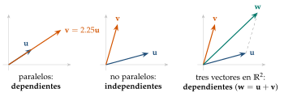
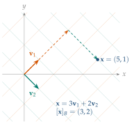
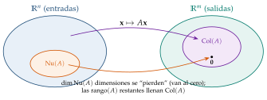

Independencia lineal, bases y dimensión
- decidir si un conjunto de vectores es linealmente independiente;
- reconocer y construir bases de un espacio o subespacio;
- calcular coordenadas respecto de una base distinta de la habitual;
- calcular la dimensión de un subespacio y el rango de una matriz;
- usar el teorema del rango para entender cuántas soluciones tiene un sistema.
En el capítulo anterior vimos que un conjunto de vectores genera un subespacio. Pero algunos de esos vectores pueden sobrar: si uno es combinación de los otros, no aporta ninguna dirección nueva. En este capítulo aprenderemos a eliminar lo redundante para quedarnos con un conjunto mínimo, una base, y a medir el “tamaño” de un espacio con un número: su dimensión.
7.1 Conceptos
7.1.1 Independencia lineal
Los vectores \(\vv_1,\dots,\vv_k\) son linealmente independientes si la única forma de obtener el vector cero como combinación de ellos es con todos los coeficientes nulos:
Si existe una combinación igual a \(\cero\) con algún coeficiente distinto de cero, los vectores son linealmente dependientes.
Un conjunto de dos o más vectores es dependiente si y solo si al menos uno de ellos es combinación lineal de los demás. En particular:
- dos vectores son dependientes si y solo si uno es múltiplo del otro (son paralelos);
- cualquier conjunto que contenga al vector \(\cero\) es dependiente;
- en \(\R^n\), cualquier conjunto con más de \(n\) vectores es dependiente.

Pon los vectores como columnas de una matriz \(A\). Son independientes si y solo si el sistema homogéneo \(A\vect c=\cero\) solo tiene la solución trivial, es decir, si al escalonar \(A\) hay un pivote en cada columna. Si \(A\) es cuadrada, esto equivale a \(\det A\neq0\).
7.1.2 Bases
Una base de un espacio (o subespacio) \(V\) es un conjunto de vectores que
- es linealmente independiente, y
- genera \(V\).
Es el conjunto “justo”: no le sobra ningún vector (independencia) y no le falta ninguno (genera).
| Espacio | Base estándar (canónica) | Número de vectores |
|---|---|---|
| \(\R^2\) | \(\vect e_1=(1,0)\), \(\vect e_2=(0,1)\) | 2 |
| \(\R^n\) | \(\vect e_1,\dots,\vect e_n\) | \(n\) |
| \(P_2\) | \(1,\ x,\ x^2\) | 3 |
| \(M_{2\times2}\) | \(E_{11},E_{12},E_{21},E_{22}\) (un 1 y el resto ceros) | 4 |
Un espacio tiene muchas bases. Por ejemplo, \(\{(1,1),(1,-1)\}\) también es base de \(\R^2\).
7.1.3 Coordenadas respecto de una base
Si \(B=\{\vv_1,\dots,\vv_n\}\) es una base de \(V\), cada vector \(\vx\in V\) se escribe de una única manera como \(\vx=c_1\vv_1+\cdots+c_n\vv_n\). Los números \((c_1,\dots,c_n)\) son las coordenadas de \(\vx\) en la base \(B\), y se anotan \([\vx]_B\).

7.1.4 Dimensión
Si un espacio \(V\) tiene una base con \(n\) vectores, entonces todas sus bases tienen \(n\) vectores. Ese número es la dimensión de \(V\), y se escribe \(\dimension V=n\).
Así, \(\dimension\R^n=n\), \(\dimension P_2=3\) y \(\dimension M_{2\times3}=6\). Una recta por el origen tiene dimensión 1 y un plano por el origen, dimensión 2. El subespacio \(\{\cero\}\) tiene dimensión 0.
Si \(\dimension V=n\):
- más de \(n\) vectores siempre son dependientes; menos de \(n\) vectores nunca generan \(V\);
- \(n\) vectores independientes automáticamente generan \(V\) (son base), y \(n\) vectores que generan \(V\) son automáticamente independientes.
7.1.5 Rango y los subespacios de una matriz
Para una matriz \(A\) de \(m\times n\):
- el espacio columna \(\Col(A)\) es el subespacio de \(\R^m\) generado por sus columnas;
- el espacio fila \(\Fil(A)\) es el subespacio de \(\R^n\) generado por sus filas;
- el espacio nulo \(\nul(A)\) es el conjunto de soluciones de \(A\vx=\cero\) (Capítulo 6).
El rango de \(A\) es el número de pivotes de su forma escalonada. Se cumple \(\rango(A)=\dimension\Col(A)=\dimension\Fil(A)\).
Las columnas pivote de la matriz original forman una base de \(\Col(A)\). ¡Ojo!: de la original, no de la escalonada.
Si \(A\) tiene \(n\) columnas,
En palabras: columnas con pivote + columnas sin pivote (variables libres) = número total de incógnitas.

El sistema \(A\vx=\vb\), con \(n\) incógnitas:
- es compatible si y solo si \(\rango(A)=\rango(A\,|\,\vb)\);
- si es compatible, la solución es única cuando \(\rango(A)=n\), y tiene \(n-\rango(A)\) variables libres cuando \(\rango(A)<n\).
Una matriz \(A\) de \(4\times6\) tiene rango 4. ¿Cuál es la dimensión de \(\nul(A)\)?
Ver respuesta
7.2 Cómo utilizar los conceptos
- Atajos: ¿hay más de \(n\) vectores en \(\R^n\)? ¿Está el cero? ¿Hay dos paralelos? Si sí, son dependientes.
- Si son \(n\) vectores en \(\R^n\): calcula el determinante de la matriz con ellos como columnas. Independientes \(\iff\det\neq0\).
- En general: escalona la matriz de columnas \(\vv_i\). Independientes \(\iff\) hay pivote en todas las columnas.
- Si son dependientes, una solución no trivial de \(A\vect c=\cero\) da la relación entre ellos.
- Pon los vectores como columnas de \(A\) y escalona.
- Identifica las columnas pivote.
- Los vectores originales de esas columnas forman una base del espacio generado; su número es la dimensión.
- Lleva \(A\) a forma escalonada reducida.
- Escribe la solución general de \(A\vx=\cero\) con parámetros para las variables libres.
- Separa: \(\vx=s\,\vect a+t\,\vect b+\cdots\). Los vectores \(\vect a,\vect b,\dots\) son una base de \(\nul(A)\).
- La dimensión es el número de variables libres. Comprueba con el teorema del rango.
- Tomar las columnas de la matriz escalonada como base del espacio columna: hay que volver a la matriz original.
- Confundir “generar” con “ser independiente”: una base debe cumplir las dos condiciones.
- Decir que la dimensión de un plano en \(\R^3\) es 3 porque sus vectores tienen tres componentes: es 2.
7.3 Ejemplos resueltos
a) ¿Son independientes \((1,2,1)\), \((0,1,3)\), \((1,0,2)\)? b) ¿Y \((1,2,1)\), \((0,1,3)\), \((2,5,5)\)?
Solución. a) \(\det\begin{pmatrix}1&0&1\\2&1&0\\1&3&2\end{pmatrix}=1(2-0)-0+1(6-1)=7\neq0\): independientes (y forman una base de \(\R^3\)).
b) \(\det\begin{pmatrix}1&0&2\\2&1&5\\1&3&5\end{pmatrix}=0\): dependientes. Resolviendo \(A\vect c=\cero\) se obtiene \(\vect c=(-2,-1,1)\), es decir, \(-2\vv_1-\vv_2+\vv_3=\cero\), o bien \(\vv_3=2\vv_1+\vv_2\).
Encuentra una base y la dimensión de
Solución.
Los pivotes están en las columnas 1 y 3. Una base es \(\{(1,2,0,1),\ (0,1,1,0)\}\) y \(\dimension W=2\). Los vectores sobrantes son combinaciones: \((2,4,0,2)=2\vv_1\) y \((1,3,1,1)=\vv_1+\vv_3\).
Encuentra las coordenadas de \(\vx=(5,1)\) en la base \(B=\{(1,1),(1,-1)\}\).
Solución. \(a(1,1)+b(1,-1)=(5,1)\) da \(a+b=5\) y \(a-b=1\), así que \(a=3\), \(b=2\): \([\vx]_B=(3,2)\) (Figura 7.2).
¿Es \(B=\{1+x,\ x+x^2,\ 1+x^2\}\) una base de \(P_2\)? Si lo es, encuentra las coordenadas de \(p(x)=2+4x+2x^2\).
Solución. Identificamos cada polinomio \(a+bx+cx^2\) con el vector \((a,b,c)\) y los ponemos como columnas:
Son tres vectores independientes en un espacio de dimensión 3: por la Propiedad 7.7, forman una base. Para las coordenadas, \(a(1+x)+b(x+x^2)+c(1+x^2)=2+4x+2x^2\) da \(a+c=2\), \(a+b=4\), \(b+c=2\). Sumando las tres, \(a+b+c=4\), de donde \(b=2\), \(c=0\), \(a=2\). Así \([p]_B=(2,2,0)\): \(p=2(1+x)+2(x+x^2)\).
Para \(A=\begin{pmatrix}1&2&0&-1\\2&4&1&1\\3&6&1&0\end{pmatrix}\), encuentra una base de \(\nul(A)\) y comprueba el teorema del rango.
Solución. La forma escalonada reducida es \(\begin{pmatrix}1&2&0&-1\\0&0&1&3\\0&0&0&0\end{pmatrix}\): pivotes en las columnas 1 y 3, así que \(\rango(A)=2\). Variables libres \(x_2=s\), \(x_4=t\); entonces \(x_1=-2s+t\) y \(x_3=-3t\):
Base de \(\nul(A)\): \(\{(-2,1,0,0),(1,0,-3,1)\}\); dimensión 2. Comprobación: \(2+2=4\) columnas. ✓
Clasifica \(A\vx=\vb\) con \(A=\begin{pmatrix}1&1&1\\1&2&3\\2&3&4\end{pmatrix}\) para a) \(\vb=(3,6,9)\) y b) \(\vb=(3,6,10)\).
Solución. La tercera fila de \(A\) es la suma de las dos primeras, así que \(\rango(A)=2\). a) \(9=3+6\), la matriz ampliada también tiene rango 2: compatible indeterminado, con \(3-2=1\) variable libre. b) \(10\neq3+6\): \(\rango(A|\vb)=3\neq2\), incompatible.
7.4 Aplicaciones en la vida real
Una tienda registra en una planilla, para cada venta, el precio neto, el IVA (19 %), el total y las unidades:
| Neto | IVA | Total | Unidades |
|---|---|---|---|
| 1 000 | 190 | 1 190 | 3 |
| 2 500 | 475 | 2 975 | 1 |
| 4 000 | 760 | 4 760 | 2 |
| 800 | 152 | 952 | 5 |
Como \(\text{IVA}=0.19\cdot\text{Neto}\) y \(\text{Total}=1.19\cdot\text{Neto}\), las columnas son dependientes y la matriz tiene rango 2: la información “real” cabe en dos columnas. En ciencia de datos, detectar columnas dependientes (o casi dependientes) permite comprimir datos y evitar errores en los modelos estadísticos, que fallan cuando hay variables redundantes.
Un robot de bodega solo puede avanzar en dos direcciones fijas, \(\vect d_1=(2,1)\) y \(\vect d_2=(-1,1)\) (en metros), porque sus rieles están en diagonal. Como \(\vect d_1\) y \(\vect d_2\) son independientes, forman una base de \(\R^2\): cualquier punto es alcanzable, y de una única manera. Para llegar a \((4,5)\) resolvemos \(a(2,1)+b(-1,1)=(4,5)\), de donde \(a=3\), \(b=2\): 3 tramos por el primer riel y 2 por el segundo. Esas son las coordenadas del destino en la base de los rieles.
Escribimos cada reacción como un vector con los coeficientes de cada sustancia (\(\mathrm{H_2},\mathrm{O_2},\mathrm{H_2O},\mathrm{H_2O_2}\)), negativos para reactivos y positivos para productos:
Como \(R_3=R_1-R_2\), solo hay dos reacciones independientes: la tercera es consecuencia de las otras. Los ingenieros químicos usan el rango de esta matriz para saber cuántas reacciones deben medir en un reactor.
En la red de calles de la Aplicación 2.2, las cuatro ecuaciones de conservación tienen una matriz de coeficientes de rango 3 con 4 incógnitas. Por el teorema del rango hay \(4-3=1\) variable libre: basta instalar un contador de autos (en cualquier calle) para conocer el flujo en las cuatro. En redes reales con cientos de calles, el rango dice cuántos sensores son indispensables.
7.5 Ejercicios de práctica
- 7.1¿Son independientes? a) \((1,2)\), \((3,6)\) b) \((1,2)\), \((2,1)\) c) \((1,0)\), \((0,1)\), \((2,3)\) d) \((0,0)\), \((1,1)\).Ver solución
- 7.2¿Son independientes? a) \((1,0,0)\), \((1,1,0)\), \((1,1,1)\) b) \((1,2,3)\), \((2,4,6)\), \((0,1,1)\).Ver solución
- 7.3
¿Cuáles son bases de \(\R^2\)?
- \(\{(1,1),(1,-1)\}\)
- \(\{(2,4),(1,2)\}\)
- \(\{(1,0)\}\)
- \(\{(1,0),(0,1),(1,1)\}\)
- 7.4Encuentra las coordenadas de \((7,3)\) en la base \(B=\{(1,1),(2,1)\}\).Ver solución
- 7.5
Indica la dimensión de:
- \(\R^5\)
- \(P_3\)
- \(M_{2\times3}\)
- el plano \(x+y-z=0\)
- \(\gen\{(1,2,3)\}\)
- 7.6Calcula el rango: a) \(\begin{pmatrix}1&2\\2&4\end{pmatrix}\) b) \(\begin{pmatrix}1&2&3\\0&1&4\\0&0&0\end{pmatrix}\) c) \(I_3\).Ver solución
- 7.7¿Para qué valores de \(k\) son dependientes los vectores \((k,1,0)\), \((1,k,0)\) y \((1,1,1)\)?Ver solución
- 7.8Encuentra una base y la dimensión de \(\gen\{(1,-1,2),(2,-2,4),(1,0,1),(3,-1,4)\}\).Ver solución
- 7.9Encuentra una base y la dimensión de \(\nul(A)\) para \(A=\begin{pmatrix}1&2&-1&3\\2&4&1&0\end{pmatrix}\).Ver solución
- 7.10Calcula el rango y la dimensión del espacio nulo de \(A=\begin{pmatrix}1&2&3\\2&4&6\\1&1&1\end{pmatrix}\), y verifica el teorema del rango.Ver solución
- 7.11Encuentra una base del plano \(x-2y+3z=0\).Ver solución
- 7.12Completa \(\{(1,1,0),(0,1,1)\}\) hasta obtener una base de \(\R^3\).Ver solución
- 7.13Encuentra las coordenadas de \(p(x)=2+3x-x^2\) en la base \(\{1,\ 1+x,\ 1+x+x^2\}\) de \(P_2\).Ver solución
- 7.14Usa rangos para clasificar \(\sistema{x+y+z=1\\2x+2y+2z=2\\x-y=0}\). ¿Qué pasa si el 2 de la segunda ecuación se cambia por 3?Ver solución
- 7.15Calcula el rango de la matriz de datos de la Aplicación 7.1 y decide qué columnas bastaría guardar.Ver solución
- 7.16Un robot se mueve por rieles en las direcciones \((2,1)\) y \((-1,1)\). ¿Cuántos tramos debe recorrer por cada riel para llegar a \((4,5)\)? ¿Y a \((1,8)\)?Ver solución
- 7.17Comprueba que las reacciones \(R_1\), \(R_2\) y \(R_3\) de la Aplicación 7.3 son dependientes y calcula el rango de la matriz que forman.Ver solución
- 7.18Calcula el rango de la matriz de coeficientes del sistema de tráfico \(\sistema{x_1-x_4=200\\x_1-x_2=200\\x_3-x_2=200\\x_3-x_4=200}\) y explica cuántos flujos hay que medir.Ver solución
- 7.19En el espacio de funciones, ¿son independientes \(\sin^2t\), \(\cos^2t\) y la función constante \(1\)? (Sugerencia: recuerda una identidad trigonométrica.)Ver solución
- 7.20Desafío. Demuestra que si \(\vu,\vv,\vw\) son independientes, también lo son \(\vu+\vv\), \(\vv+\vw\) y \(\vu+\vw\).Ver solución
7.6 Solucionario
7.1 Solución del ejercicio 7.1
a) Dependientes (\((3,6)=3(1,2)\)). b) Independientes. c) Dependientes (tres vectores en \(\R^2\)). d) Dependientes (contiene el cero).↑ volver al enunciado7.2 Solución del ejercicio 7.2
a) \(\det=1\neq0\): independientes. b) Dependientes: \((2,4,6)=2(1,2,3)\).↑ volver al enunciado7.3 Solución del ejercicio 7.3
a) Sí. b) No: son paralelos. c) No: un solo vector no genera \(\R^2\). d) No: tres vectores en \(\R^2\) son dependientes.↑ volver al enunciado7.4 Solución del ejercicio 7.4
\(a+2b=7\), \(a+b=3\): \(b=4\), \(a=-1\). \([\vx]_B=(-1,4)\).↑ volver al enunciado7.5 Solución del ejercicio 7.5
a) 5 b) 4 (\(1,x,x^2,x^3\)) c) 6 d) 2 e) 1.↑ volver al enunciado7.6 Solución del ejercicio 7.6
a) 1 b) 2 c) 3.↑ volver al enunciado7.7 Solución del ejercicio 7.7
\(\det\begin{pmatrix}k&1&1\\1&k&1\\0&0&1\end{pmatrix}=k^2-1=0\): son dependientes si \(k=1\) o \(k=-1\).↑ volver al enunciado7.8 Solución del ejercicio 7.8
Escalonando la matriz de columnas, los pivotes quedan en las columnas 1 y 3. Base \(\{(1,-1,2),(1,0,1)\}\), dimensión 2. (Además \((2,-2,4)=2\vv_1\) y \((3,-1,4)=\vv_1+2\vv_3\).)↑ volver al enunciado7.9 Solución del ejercicio 7.9
Forma reducida \(\begin{pmatrix}1&2&0&1\\0&0&1&-2\end{pmatrix}\). Con \(x_2=s\), \(x_4=t\): \(\vx=s(-2,1,0,0)+t(-1,0,2,1)\). Base \(\{(-2,1,0,0),(-1,0,2,1)\}\), dimensión 2.↑ volver al enunciado7.10 Solución del ejercicio 7.10
La segunda fila es el doble de la primera; la forma escalonada tiene 2 pivotes: \(\rango=2\). \(\nul(A)=\gen\{(1,-2,1)\}\), dimensión 1. \(2+1=3\). ✓↑ volver al enunciado7.11 Solución del ejercicio 7.11
\(x=2y-3z\): \((x,y,z)=y(2,1,0)+z(-3,0,1)\). Base \(\{(2,1,0),(-3,0,1)\}\).↑ volver al enunciado7.12 Solución del ejercicio 7.12
Por ejemplo, agregando \((0,0,1)\): \(\det\begin{pmatrix}1&0&0\\1&1&0\\0&1&1\end{pmatrix}=1\neq0\).↑ volver al enunciado7.13 Solución del ejercicio 7.13
\(a+b(1+x)+c(1+x+x^2)\): \(c=-1\), \(b+c=3\Rightarrow b=4\), \(a+b+c=2\Rightarrow a=-1\). Coordenadas \((-1,4,-1)\).↑ volver al enunciado7.14 Solución del ejercicio 7.14
\(\rango(A)=\rango(A|\vb)=2<3\): compatible indeterminado con una variable libre (soluciones \((\tfrac12-\tfrac t2,\ \tfrac12-\tfrac t2,\ t)\)). Con 3: \(\rango(A|\vb)=3\), incompatible.↑ volver al enunciado7.15 Solución del ejercicio 7.15
Rango 2: basta guardar Neto y Unidades; IVA y Total se calculan a partir del Neto.↑ volver al enunciado7.16 Solución del ejercicio 7.16
\((4,5)\): \(a=3\), \(b=2\). \((1,8)\): \(2a-b=1\), \(a+b=8\), así \(a=3\), \(b=5\).↑ volver al enunciado7.17 Solución del ejercicio 7.17
\(R_1-R_2=(-1,0,2,-1)=R_3\), luego \(R_1-R_2-R_3=\cero\) con coeficientes no nulos: dependientes. El rango es 2 (\(R_1\) y \(R_2\) no son paralelos).↑ volver al enunciado7.18 Solución del ejercicio 7.18
El rango es 3 (la cuarta ecuación es la primera menos la segunda más la tercera). Hay \(4-3=1\) variable libre: basta medir un flujo.↑ volver al enunciado7.19 Solución del ejercicio 7.19
No: \(\sin^2t+\cos^2t-1=0\) para todo \(t\), una combinación no trivial igual a la función cero. Son dependientes.↑ volver al enunciado7.20 Solución del ejercicio 7.20
Si \(a(\vu+\vv)+b(\vv+\vw)+c(\vu+\vw)=\cero\), entonces \((a+c)\vu+(a+b)\vv+(b+c)\vw=\cero\). Por independencia, \(a+c=0\), \(a+b=0\), \(b+c=0\). Sumando, \(2(a+b+c)=0\), y de ahí \(a=b=c=0\).↑ volver al enunciado
¿Terminaste de estudiar este capítulo?